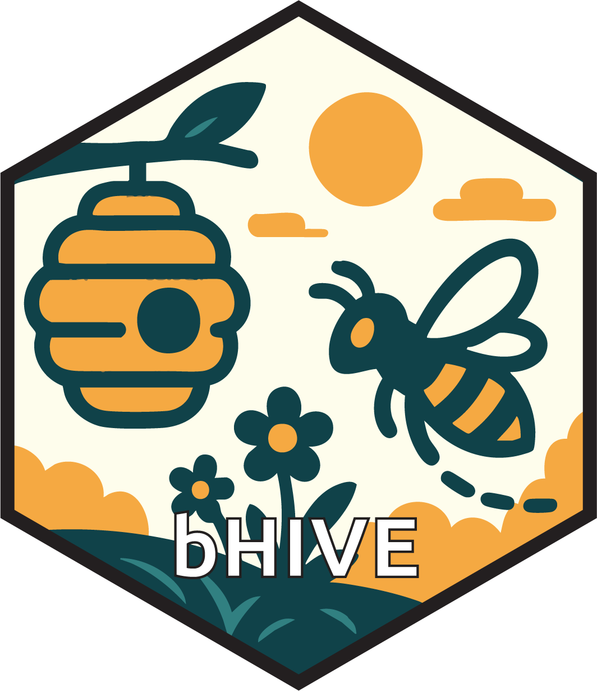

Composing immune modules with AINet
Nick Borcherding
Washington University in St. Louis, School of Medicine, St. Louis, MO, USAncborch@gmail.com
2026-10-16
Source:vignettes/immune-modules.Rmd
immune-modules.Rmd## Warning: replacing previous import 'S4Arrays::makeNindexFromArrayViewport' by
## 'DelayedArray::makeNindexFromArrayViewport' when loading 'SummarizedExperiment'Introduction
The bHIVE package has two interfaces. The functional
bHIVE() runs a whole analysis in one call, and the
introductory vignette,
vignette("bHIVE", package = "bHIVE"), uses it on mass
cytometry data. The R6 class AINet exposes the same engine
as a model object. This vignette covers AINet and the nine
immune modules it accepts, each of which changes one stage of the
algorithm. We use the small iris data so each example runs
in a second.
Each module is an independent R6 class that encapsulates a single
immunological mechanism. You create modules separately and pass them to
AINet$new(), allowing you to mix and match any
combination.
model <- AINet$new(
nAntibodies = 20,
shm = SHMEngine$new(method = "adaptive"),
idiotypic = IdiotypicNetwork$new(),
germinalCenter = GerminalCenter$new(),
microenvironment = Microenvironment$new(),
init = VDJLibrary$new(method = "pca"),
activation = ActivationGate$new(),
memory = MemoryPool$new()
)Somatic Hypermutation Engine
The SHMEngine controls how antibodies mutate after
cloning. Five strategies are available, each grounded in a different
aspect of SHM biology:
| Method | Biological Analogy | When to Use |
|---|---|---|
"uniform" |
Random point mutations | Baseline; simple and robust |
"airs" |
Affinity-proportional mutation (AIRS) | When high-affinity antibodies should explore less |
"hotspot" |
AID targets WRCY motifs | When some features matter more than others |
"energy" |
E_SHM ~ N_Mut^2 budget constraint | When you want bounded total perturbation |
"adaptive" |
Per-feature Adam-like moment tracking | Best for complex landscapes; most novel |
The adaptive method is the most distinctive in which somatic hypermutation and the Adam optimizer function the same. Each feature dimension maintains running mean and variance of past gradients.
data(iris)
X <- as.matrix(iris[, 1:4])
y <- iris$Species
set.seed(3)
methods <- c("uniform", "airs", "adaptive")
results <- lapply(methods, function(m) {
shm <- SHMEngine$new(method = m)
model <- AINet$new(nAntibodies = 15,
maxIter = 15,
shm = shm,
verbose = FALSE)
model$fit(X, y, task = "classification")
data.frame(
method = m,
accuracy = mean(model$result$assignments == as.character(y)),
n_ab = nrow(model$repertoire$as_matrix())
)
})
do.call(rbind, results)## method accuracy n_ab
## 1 uniform 0.8000000 12
## 2 airs 0.7266667 10
## 3 adaptive 0.9466667 15Idiotypic Network Regulation
In classical AIS, similar antibodies are suppressed via a simple
distance threshold (epsilon). The IdiotypicNetwork module
replaces this with network dynamics inspired by Varela and Coutinho’s
(1991) second-generation immune network theory.
The key idea is a bell-shaped activation function. Too little stimulation from other antibodies leads to death, moderate stimulation to activation, and excessive stimulation to suppression.
The module is experimental. It applies the activation to each pair of antibodies, so it works as intended on a small, tight repertoire. The example below builds one: four antibodies at pairwise affinity 0.25, in the middle of the default activation window, and one far from the rest.
a <- sqrt(log(4) / 2)
A <- rbind(cbind(diag(4) * a, 0), c(0, 0, 0, 0, 10))
rep <- ImmuneRepertoire$new(A)
idi <- IdiotypicNetwork$new(theta_low = 0.01, theta_high = 0.5)
idi$regulate(rep, "gaussian", list(alpha = 1))
idi## <IdiotypicNetwork>
## Activation window: [0.010, 0.500]
## Dynamics: 20 steps (dt=0.100)
## Source: 0.500 Decay: 0.100 Survival: 0.500
## Last run: 4/5 antibodies survived## [1] 1.73 1.73 1.73 1.73 0.12The four antibodies that stimulate each other survive. The isolated one is under-stimulated and dies.
On a full repertoire most pairs of antibodies are far apart. Their
affinity is near zero, below theta_low, so each pair counts
as suppression and the dynamics remove every antibody.
AINet then keeps the top 10% by population and reports
it:
set.seed(1)
model_idi <- AINet$new(nAntibodies = 25, maxIter = 15,
idiotypic = IdiotypicNetwork$new(),
verbose = FALSE)
model_idi$fit(X, task = "clustering")## IdiotypicNetwork removed every antibody in 1 of 15 iterations; the top 10% by population were kept each time. See ?IdiotypicNetwork for when the module applies.
model_idi$repertoire$size()## [1] 2Check that antibodies survive on your data before relying on this module. A field-based form, in which the activation acts on the total stimulation each antibody receives, is planned.
Germinal Center Selection
The GerminalCenter module models the competition for T
follicular helper (Tfh) cell help that occurs in real germinal centers.
Only antibodies that receive Tfh help survive – this implements
quality-based selection pressure.
The quality metric is task-aware:
- Classification: proportion of correctly matched labels
- Clustering: local density (sum of affinities to assigned data points)
gc <- GerminalCenter$new(
nTfh = 20, # number of Tfh selectors
selectionPressure = 0.2, # 0 = no selection, 1 = very strict
rounds = 1
)
set.seed(4)
model_gc <- AINet$new(
nAntibodies = 30,
maxIter = 15,
germinalCenter = gc,
verbose = FALSE
)
model_gc$fit(X, y, task = "classification")
c(antibodies = model_gc$repertoire$size(),
accuracy = mean(model_gc$predict(X) == y))## antibodies accuracy
## 17.0000000 0.8533333Selection pressure trades repertoire size for quality. Strong pressure trims the repertoire hard and, on a small dataset like iris, can cost accuracy. Tune it against a model without the module.
Microenvironment
The Microenvironment module classifies the local context
around each antibody into three zones and adapts mutation rates
accordingly:
- Stable (high local density): reduce mutation rate to preserve good antibodies
- Explore (low local density): increase mutation rate to search sparse regions
- Boundary (intermediate): moderate mutation, potential trigger for class switching
me <- Microenvironment$new(
high_density_threshold = 0.75,
low_density_threshold = 0.25,
stabilization_factor = 0.3, # reduce mutation to 30% in stable zones
exploration_factor = 2.0 # double mutation in exploration zones
)
rep <- ImmuneRepertoire$new(X[sample(150, 15), ])
env <- me$assess(rep, X)
table(env$zones)##
## boundary explore stable
## 7 4 4V(D)J Gene Library Initialization
Instead of random sampling, VDJLibrary generates
antibodies by combinatorial assembly of gene segments, mimicking V(D)J
recombination. The feature space is split into three segments (V, D, J),
each discretized into alleles, and new antibodies are built by combining
one allele from each segment.
vdj <- VDJLibrary$new(nV = 5,
nD = 3,
nJ = 3,
method = "pca")
A <- vdj$generate(20, X)
dim(A) # 20 antibodies x 4 features## [1] 20 4
print(vdj)## <VDJLibrary> method='pca' V=5 D=3 J=3
## Combinatorial space: 45 antibodiesThree decomposition methods are available:
-
"pca": PCA components define gene segments (best for correlated features) -
"cluster": k-means within dimension groups creates alleles -
"random_partition": random feature grouping (simplest)
Two-Signal Activation Gate
In real immunity, B cells require two signals to activate: antigen
recognition (Signal 1) and costimulatory context (Signal 2).
The ActivationGate module prevents spurious cloning on
isolated outliers.
Signal 2 options:
-
"density": local data density around the antibody -
"danger": user-provided danger score per data point -
"entropy": local label entropy (classification only)
gate <- ActivationGate$new(
signal2_type = "density",
threshold1 = 0.1, # minimum affinity (Signal 1)
threshold2 = 0.3 # density percentile (Signal 2)
)
A <- X[sample(150, 10), ]
rep <- ImmuneRepertoire$new(A)
aff <- rep$affinity_matrix(X, "gaussian")
activated <- gate$evaluate(aff, X, A)
c(activated = sum(activated), total = length(activated))## activated total
## 413 1500Memory Pool
The MemoryPool archives high-performing antibodies and
recalls them when relevant to current data. This is useful for streaming
or non-stationary data where distribution shifts may occur.
mp <- MemoryPool$new(
archive_threshold = 0.01, # minimum average affinity to archive
max_memory = 50,
recall_threshold = 0.01
)
rep <- ImmuneRepertoire$new(X[sample(150, 10), ])
mp$archive(rep, X)## [1] 10
mp## <MemoryPool> 10 cells (max 50)
## Archive threshold: 0.010
## Recall threshold: 0.010
# Recall memories relevant to a subset
recalled <- mp$recall(X[1:30, ])
nrow(recalled)## [1] 4Class Switcher
The ClassSwitcher module changes the effective kernel
width of antibodies based on their microenvironment zone, analogous to
real B cell isotype switching:
| Isotype | Kernel Width | Matching Style |
|---|---|---|
| IgM | alpha = 0.1 | Broad (exploration) |
| IgG | alpha = 5.0 | Specific (discrimination) |
| IgA | alpha = 1.0 | Intermediate (boundary patrol) |
cs <- ClassSwitcher$new(alpha_IgM = 0.1, alpha_IgG = 5.0, alpha_IgA = 1.0)
rep <- ImmuneRepertoire$new(X[sample(150, 10), ])
zones <- sample(c("stable", "explore", "boundary"), 10, replace = TRUE)
alphas <- cs$switch_isotypes(rep, zones)
data.frame(zone = zones, isotype = rep$metadata$isotype, alpha = alphas)## zone isotype alpha
## 1 explore IgM 0.1
## 2 stable IgG 5.0
## 3 boundary IgA 1.0
## 4 stable IgG 5.0
## 5 stable IgG 5.0
## 6 boundary IgA 1.0
## 7 stable IgG 5.0
## 8 boundary IgA 1.0
## 9 stable IgG 5.0
## 10 explore IgM 0.1Convergent Selection
The ConvergentSelector identifies “public antibodies” –
antibodies that appear across multiple independent bHIVE runs. This
implements the immunological concept of public clonotypes as a
biologically-motivated ensemble method.
# Run 3 independent bHIVE analyses
set.seed(42)
results <- lapply(1:3, function(i) {
m <- AINet$new(nAntibodies = 15, maxIter = 10, verbose = FALSE)
m$fit(X, task = "clustering")
m$result
})
conv <- ConvergentSelector$new(tolerance = 1.0, min_appearances = 2)
public <- conv$from_results(results)
nrow(public)## [1] 12Putting It All Together
Here is a full example combining multiple modules for a classification task:
set.seed(2)
model <- AINet$new(
nAntibodies = 25,
maxIter = 20,
k = 3,
beta = 5,
shm = SHMEngine$new(method = "adaptive", base_rate = 0.1),
germinalCenter = GerminalCenter$new(nTfh = 8, selectionPressure = 0.4),
microenvironment = Microenvironment$new(),
classSwitcher = ClassSwitcher$new(),
verbose = FALSE
)
model$fit(X, y, task = "classification")
model## <AINet>
## Repertoire: 9 antibodies x 4 features
## Task: classification
## Iterations: 20
mean(model$predict(X) == y)## [1] 0.82Not every module combination improves every dataset. Compare a
combination against the plain AINet before keeping it, on
held-out data or with cross-validation.
caret::train(method = bHIVEmodel) passes extra arguments,
modules included, on to bHIVE().
Session Information
## R version 4.6.1 (2026-06-24)
## Platform: x86_64-pc-linux-gnu
## Running under: Ubuntu 24.04.5 LTS
##
## Matrix products: default
## BLAS: /usr/lib/x86_64-linux-gnu/openblas-pthread/libblas.so.3
## LAPACK: /usr/lib/x86_64-linux-gnu/openblas-pthread/libopenblasp-r0.3.26.so; LAPACK version 3.12.0
##
## locale:
## [1] LC_CTYPE=C.UTF-8 LC_NUMERIC=C LC_TIME=C.UTF-8
## [4] LC_COLLATE=C.UTF-8 LC_MONETARY=C.UTF-8 LC_MESSAGES=C.UTF-8
## [7] LC_PAPER=C.UTF-8 LC_NAME=C LC_ADDRESS=C
## [10] LC_TELEPHONE=C LC_MEASUREMENT=C.UTF-8 LC_IDENTIFICATION=C
##
## time zone: UTC
## tzcode source: system (glibc)
##
## attached base packages:
## [1] stats graphics grDevices utils datasets methods base
##
## other attached packages:
## [1] bHIVE_0.99.8 BiocStyle_2.40.0
##
## loaded via a namespace (and not attached):
## [1] sass_0.4.10 generics_0.1.4
## [3] SparseArray_1.12.3 lattice_0.22-9
## [5] digest_0.6.39 magrittr_2.0.5
## [7] evaluate_1.0.5 grid_4.6.1
## [9] RColorBrewer_1.1-3 bookdown_0.48
## [11] fastmap_1.2.0 Matrix_1.7-5
## [13] jsonlite_2.0.0 BiocManager_1.30.27
## [15] SingleCellExperiment_1.34.0 scales_1.4.0
## [17] codetools_0.2-20 textshaping_1.0.5
## [19] jquerylib_0.1.4 abind_1.4-8
## [21] cli_3.6.6 rlang_1.3.0
## [23] XVector_0.52.0 BiocNeighbors_2.6.0
## [25] Biobase_2.72.0 DelayedArray_0.38.2
## [27] cachem_1.1.0 yaml_2.3.12
## [29] otel_0.2.0 S4Arrays_1.12.1
## [31] tools_4.6.1 parallel_4.6.1
## [33] BiocParallel_1.46.0 dplyr_1.2.1
## [35] ggplot2_4.0.3 SummarizedExperiment_1.42.0
## [37] BiocGenerics_0.58.1 vctrs_0.7.3
## [39] R6_2.6.1 matrixStats_1.5.0
## [41] stats4_4.6.1 lifecycle_1.0.5
## [43] Seqinfo_1.2.0 S4Vectors_0.50.3
## [45] fs_2.1.0 IRanges_2.46.0
## [47] bluster_1.22.0 cluster_2.1.8.2
## [49] ragg_1.5.2 pkgconfig_2.0.3
## [51] desc_1.4.3 pkgdown_2.2.1
## [53] pillar_1.11.1 bslib_0.12.0
## [55] gtable_0.3.6 glue_1.8.1
## [57] Rcpp_1.1.2 systemfonts_1.3.2
## [59] GenomicRanges_1.64.0 xfun_0.61
## [61] tibble_3.3.1 tidyselect_1.2.1
## [63] MatrixGenerics_1.24.0 knitr_1.52
## [65] farver_2.1.2 igraph_2.3.4
## [67] htmltools_0.5.9 clusterCrit_1.3.0
## [69] rmarkdown_2.32 compiler_4.6.1
## [71] S7_0.2.2